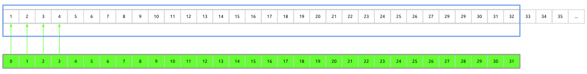
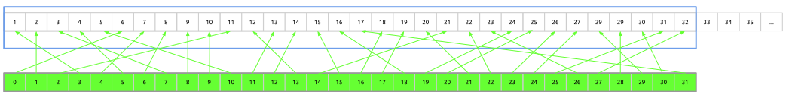
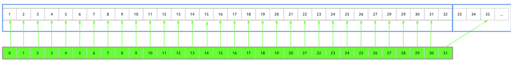
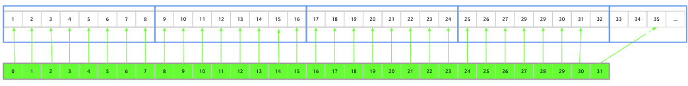
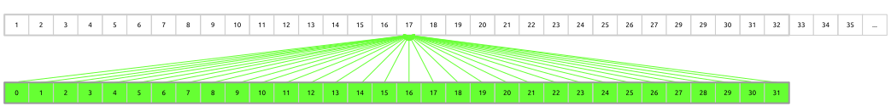

Code GPU with CUDA
Memory subsystem
Created by Marina Kolpakova ( cuda.geek ) for Itseez
previous
Outline
- GPU memory types
- Vector transaction
- Coalesced memory access
- Memory hierarchy
- request trajectory
- Hardware supported atomics
- Texture, constant, shared memory types
- Register spilling
Out of scope
- Computer graphics capabilities
- Organization of texture interpolation HW
GPU memory types
- On-chip is placed on SM
- Register file (RF)
- Shared (SMEM)
- Off-chip is placed in GPU’s RAM
- Global (GMEM)
- Constant (CMEM)
- Texture (TEX)
- Local (LMEM)
Vector transaction
- SM has dedicated LD/ST units to handle memory access
- Global memory accesses are serviced on warp basis
Coalesced memory access
- Fist sm_10 defines coalesced access as an affine access aligned to 128 byte line 
- Other obsolete sm_1x has strict coalescing rules, too.
- Modern GPUs have more relaxed requirements and define coalesced transaction as transaction that fits cache line 
Coalesced memory access (cont)
- Request is coalesced if warp loads only bytes it needs
- The less cache lines it needs the more coalesced access it has
- Address alignment by cache line size is still preferred

Memory hierarchy
GPU memory has 2 levels of caches.

Cache characteristics
| Cache | L1 | L2 | ||
|---|---|---|---|---|
| generation | Fermi | Kepler | Fermi | Kepler |
| sizes, KB | 16/48 | 16/32/48 | up to 768 | up to 1536 |
| line width | 128B | 32B | ||
| latency | 56 clock | - | 282 | 158 |
| mode | R, n-c | - | R&W, c, WB | |
| associativity | 2x64/6x64 | - | ? | ? |
| usage | gmem, sys | sys | gmem, sys, tex | |
Memory request trajectory: LD.E
- Fermi: fully-cached load
- LD/ST units compute physical address and number of cache lines warp requests (L1 line is 128 B)
- L1 hit -> return line else go to L2
- L2 subdivides 128 B line into 4x32 B (L2 line size). If all required 32 B lines are found in L2 return result else go to gmem
- gmem
- Kepler
- discrete GPUs: like Fermi but bypass L1
- integrated GPUs: the same as Fermi
duality of cache line
The following requests are equal from gmem point of view.
 32 B granularity useful if access pattern is close to random.
Load Caching configurations
- LD
- Default (cache all): No special suffix
LD R8, [R6]; - Cache only in L2 (cache global): LD.CG
LD.CG R4, [R16]; - Bypass caches (cache volatile) LD.CV
LD.CV R14, [R14]; - Cache streaming
- Default (cache all): No special suffix
Memory request trajectory: ST.E
- Store instruction invalidates cache line in L1 on all SMs, if present (since L1s are on SM and non-coherent)
- Request goes directly to L2. Default write strategy is write back. Can be configured as write through.
- Hit to L2 costs ~160 clocks in case write-back is not needed.
- Go to gmem in case of L2 miss (penalty > 350 clocks)
Wide & narrow types
- Wide
- GPU supports wide memory transactions
/*1618*/ LD.E.128 R8, [R14]; /*1630*/ ST.E.128 [R18], R8; - Only 64 and 128-bit transactions are supported since they can be mapped to 2(4) 32-bit registers
- GPU supports wide memory transactions
- Narrow
Example: uchar2 SOA store results in 2 store transactions
struct uchar2{ unsigned char x; unsigned char y; }/*02c8*/ ST.E.U8 [R6+0x1], R0; /*02d0*/ ST.E.U8 [R6], R3;
GMEM Atomic operations
Performed in L2 per 32 B cache line.
| throughput | Fermi, per clock | Kepler, per clock |
|---|---|---|
| shared address | 1/9 th | 1 |
| independent | 24 | 64 |
Same address means the same cache line
- ATOM
ATOM.E.INC R4, [R6], R8; - RED
RED.E.ADD [R2], R0;
Texture hardware
- Legacy from graphics
- Read-only. Always loads through interpolation hardware
- Two-level: Dedicated L1, shared L2 for texture and global loads
| property | Fermi | sm_30 | sm_35 | |
|---|---|---|---|---|
| L1 | hit latency, clock | No data | 104 | 108 |
| line size, B | No data | 128 | 128 | |
| size, KB | 8 | 12 | 4sbpx12 | |
| (set)x(way) | No data | 4x24 | 4x24 | |
| L2 | hit latency, clock | No data | 212 | 229 |
| penalty, clock | No data | 316 | 351 |
Read-only data cache
L1 Texture cache is opened for global load bypassing interpolation hardware. Supported by sm_35.
/*0288*/ TEXDEPBAR 0x0;
/*0290*/ LDG.E.64 R8, [R4];
/*0298*/ TEXDEPBAR 0x0;
/*02a0*/ LDG.E.64 R4, [R8];
/*02a8*/ IADD R6, R6, 0x4;
/*02b0*/ TEXDEPBAR 0x0;
/*02b8*/ LDG.E.64 R8, [R4];
/*02c8*/ ISETP.LT.AND P0, PT, R6, R7, PT;
/*02d0*/ TEXDEPBAR 0x0;- Size is 48 KB (4 sub-partitions x 12 KB)
- Different warps go through different sub-partitions
- Single warp can use up to 12 KB
Constant memory
Optimized for uniform access from the warp.
- Compile time constants
- Kernel parameters and configurations
- 2–3 layers of caches. Latency: 4–800 clocks
Load uniform
The LDU instruction can employ constant cache hierarchy for each global memory location. LDU = load (block-) uniform variable from memory.
- Variable resides in global memory
- Prefix pointer with
constkeyword - Memory access must be uniform across all threads in the block (not dependent on threadIdx)
__global__ void kernel( test_t *g_dst, const test_t *g_src )
{
const int tid = /**/;
g_dst[tid] = g_src[0] + g_src[blockIdx.x];
} /*0078*/ LDU.E R0, [R4];
/*0080*/ LDU.E R2, [R2];Shared memory
Banked: Successive 4-byte words placed to successive banks
sm_1x – 16x4 B, sm_2x – 32x4 B, sm_3x – 32x64 B

Atomic operations are done in lock/unlock manner
(void) atomicAdd( &smem[0], src[threadIdx.x] ); /*0050*/ SSY 0x80;
/*0058*/ LDSLK P0, R3, [RZ];
/*0060*/ @P0 IADD R3, R3, R0;
/*0068*/ @P0 STSUL [RZ], R3;
/*0070*/ @!P0 BRA 0x58;
/*0078*/ NOP.S;Register spilling
- Local memory refers to memory where registers are spilled
- Physically resides in gmem, but likely cached
- A local variable require a cache line for spilling because spilling is done per warp
- Addressing is resolved by the compiler
- Stores are cached in L1
- Analogy with CPU stack variables
LDL/STL Access Operation
- Store writes line to L1
- If evicted, then line is written to L2
- The line could also be evicted from L2, in this case it is written to DRAM
- Load requests line from L1
- If a hit, operation is complete
- If a miss, then request the line from L2
- If L2 miss, then request the line from DRAM
Final words
- SM has dedicated LD/ST units to handle memory access
- Global memory accesses are serviced on warp basis
- Coalesced transaction is a transaction that fits cache line
- GPU memory has 2 levels of caches
- One L1 cache line consists of 4 L2-lines. Coalescing unit manages number of L2 lines that is actually required
- 64-bit and 128-bit memory transactions are natively supported
- Atomic operations on global memory is done in L2
- Register spilling is fully cached for both reads and writes